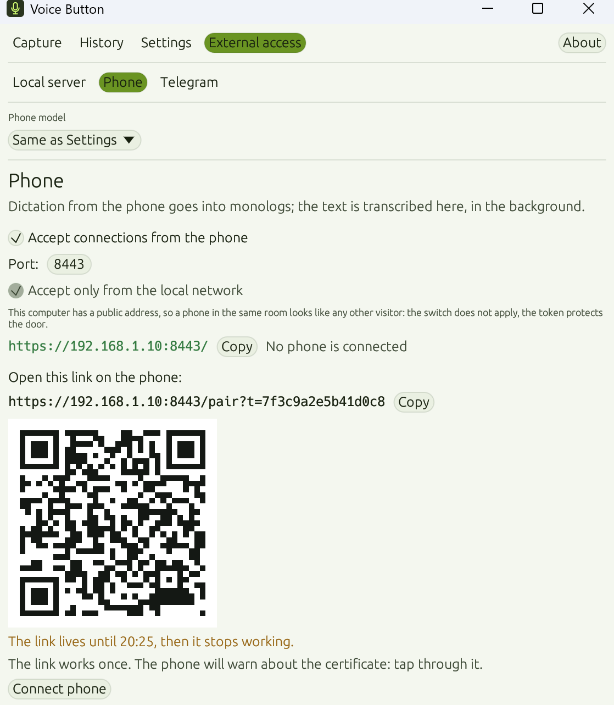
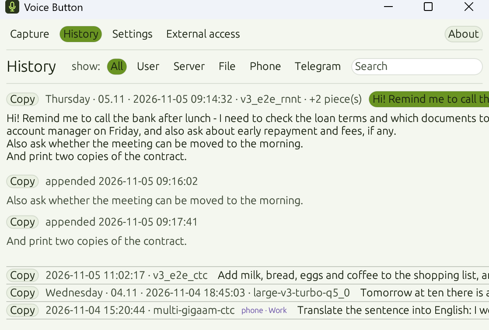
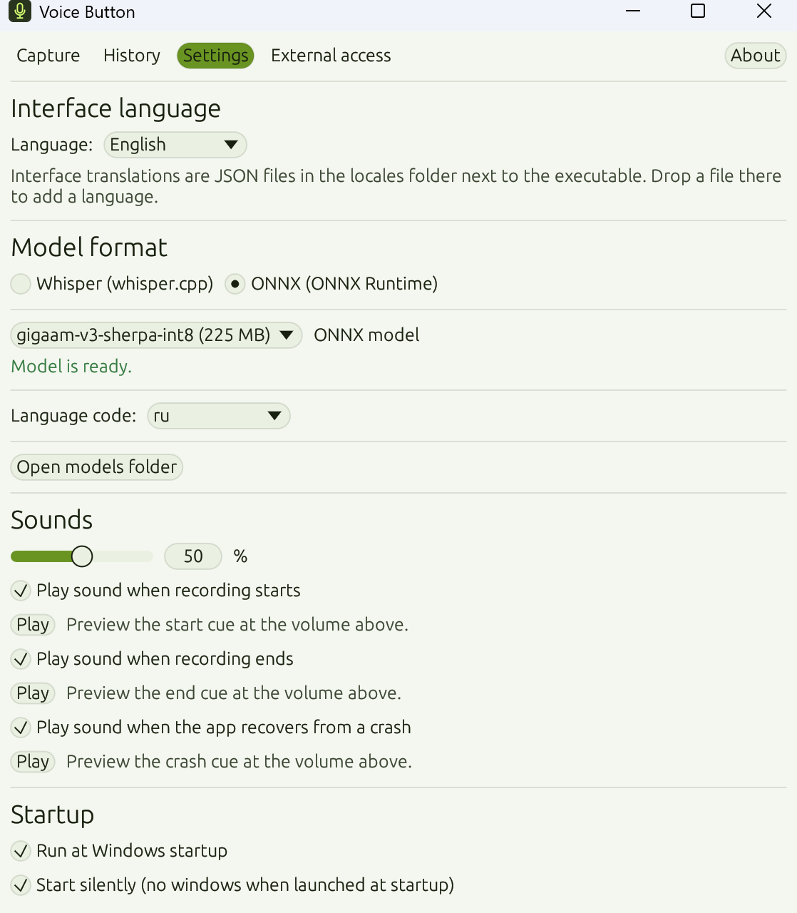
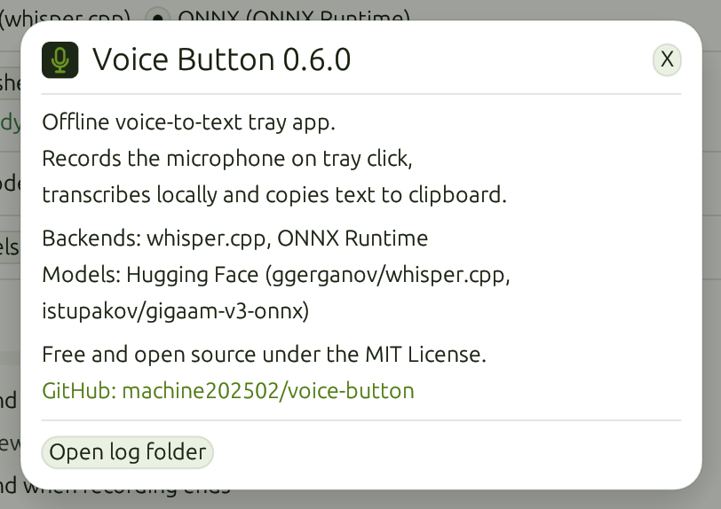

01
随处听写
点击托盘麦克风或按下快捷键，然后说话。完成的文字可以插入当前窗口、从剪贴板取走，或留在历史记录里。
功能
一个按钮，替代平时要好几个服务才能完成的事。
点击托盘麦克风或按下快捷键，然后说话。完成的文字可以插入当前窗口、从剪贴板取走，或留在历史记录里。
手机变成第二个麦克风。创建有名字的独白并在其中口述，转写在电脑上进行；没有网络时，录音会留在手机上等待。
给机器人发一条语音或一个文件，它会回复转写好的文字。
转写你已有的音频或视频——文件在你的电脑上处理。
工作原理
听写留在你的电脑上，所以不需要联网。
托盘麦克风、快捷键或窗口里的按钮都能立刻开始录音。鼠标按键的动作可以互换。
文字随着你说话不断出现。长听写会在停顿处切开，逐段转写，不必等到停止。
完成的文字已经在剪贴板里、插入到光标处，或带着日期、时间和来源留在历史记录里。
手机
在应用中开启接收，用手机相机扫描二维码。手机上会打开独白页面——像聊天一样口述的有名字的对话。

界面
应用常驻托盘，需要时再打开窗口：实时录音、历史记录和设置都在一个地方。

历史记录
记录按天分组，带有时间和来源。展开一条记录，可以看到长听写被切开的各个片段，然后整条复制或逐段复制。

设置
麦克风、鼠标动作、快捷键、声音、音量、语言和开机启动都会立即生效。模型也可以在同一窗口里下载和取消。
隐私
语音由本机运行的模型处理。没有账号，没有订阅，录音也不需要发送到服务器。
Whisper、GigaAM 和 SenseVoice 都在本地运行。在设置里选择模型，下载一次即可。
文字保存后，录音立即删除。如果转写失败，音频会留在磁盘上。
不需要注册，没有付费，也没有云端处理。源代码以 MIT 许可证开放。
你的电脑

下载
版本 @@VERSION@@
Windows 10 和 11，64 位。为所有用户安装，或使用免安装的便携压缩包。
推荐
为所有用户安装应用。
下载安装包免安装
解压后运行 voice-button.exe。请把 voice-button-ui.exe 放在旁边——两个文件都在压缩包里。
下载 ZIP模型不随包提供。首次启动时，应用会建议一个适合系统语言的模型，需要下载一次。
源代码采用 MIT 许可证。安装包内含 ONNX Runtime（MIT）、sherpa-onnx（Apache-2.0）和 whisper.cpp（MIT）；完整文本位于可执行文件旁的 THIRD-PARTY.txt。
听写不需要：识别在你的电脑上进行。联网用于下载模型，以及使用 Telegram 机器人和从其他网络访问手机。
是的。应用和源代码都以 MIT 许可证免费提供。没有订阅，也没有账号。
多语言 Whisper 和 SenseVoice（中文、英语、日语、韩语、粤语），以及俄语 GigaAM。Whisper 和 SenseVoice 会自动识别语言。
可以。语音在停顿处切开并边录边转写：你说话时文字就不断出现，停止后只处理最后一段。
到剪贴板、在插入模式下到当前窗口，或到历史记录。在历史记录里可以展开一条记录，整条或分段复制。